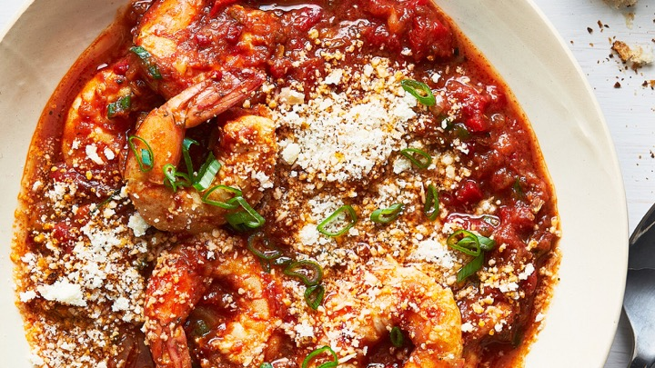

Shrimps in Purgatory
Description
This one-skillet shrimp dish is inspired by the bright flavors of eggs in purgatory, the classic Southern Italian dish in which eggs simmer in a spicy tomato sauce. The exact origins of the name are uncertain, but many say the sauce is meant to represent purgatory, and the eggs, souls. Here, shrimp stand in for the eggs, and the tomato sauce is rich and tangy, with roasted red peppers and capers. You can use frozen shrimp; just defrost them first. Serve the shrimp in shallow bowls, with crusty bread, or over orzo, couscous or polenta.
Ingredients
- 3 tablespoons olive oil
- 1 yellow or red onion, minced
- Kosher salt and black pepper
- 8 garlic cloves, minced
- 1 teaspoon dried oregano
- 1/2 to 1 teaspoon red-pepper flakes, plus more for serving
- 1/2 teaspoon fennel seeds
- 2 tablespoons minced jarred Calabrian chiles or minced jarred cherry peppers, stems removed, or cherry pepper relish
- 8 ounces roasted red peppers, drained and chopped about 1 cup
- 1 (14-ounce) can whole or crushed tomatoes
- 1 to 1 1/2 pounds peeled, deveined shrimp
- 2 scallions, thinly sliced
- 1 tablespoon capers, drained
- 1/2 cup grated Parmesan, plus more for serving
Steps
- Warm the olive oil in a 12-inch skillet over medium-high. Add the onion, season generously with salt, and cook, stirring, until the onion is translucent, soft and starting to turn golden, 7 or 8 minutes. If necessary, decrease the heat to medium to prevent scorching.
- Add the garlic and cook until fragrant and softened, about 2 minutes. Stir in the oregano, red-pepper flakes and fennel seeds, then the Calabrian chiles, roasted red peppers and tomatoes. (Crush the tomatoes by hand, if using whole.) Season with salt and pepper. Bring to a simmer, adjust the heat to maintain a simmer, and cook for about 5 minutes to slightly reduce the sauce and blend the flavors.
- Add the shrimp, scallions and capers, and cook until the shrimp are curled, pink and opaque, 3 to 7 minutes, depending on size and quantity. Turn off the heat and taste the sauce. Add more red-pepper flakes, salt and pepper, if you like. Sprinkle the cheese over the top and serve, passing more Parmesan and red-pepper flakes at the table.